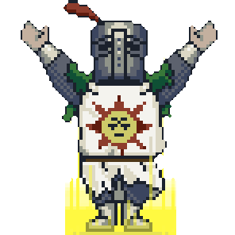

Rito di Ammissione — Modulo Ufficiale
Compila il formulario con rigore. I Grandi Maestri esamineranno la tua richiesta. Non tutte le candidature verranno accolte.
La tua richiesta è giunta ai Grandi Maestri della Setta.
Sarai contattato attraverso i canali appropriati.
Conserva il tuo codice candidato.
Codice Candidatura — Non Condividere

Torna al Sanctuarium